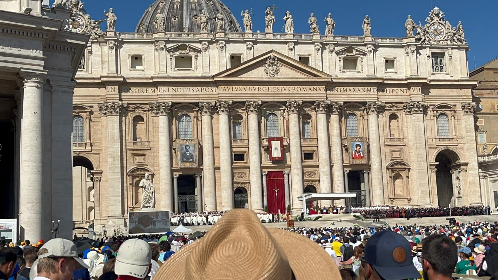
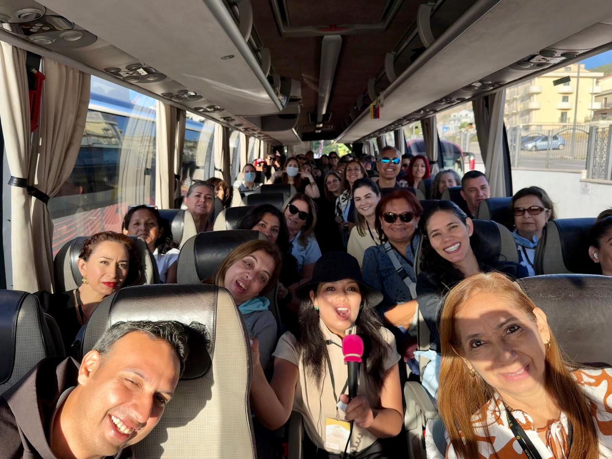

← Back to All Experiences
Pilgrimage to the Jubilee 2025 in Rome
From September 5–16, 2025, we embarked on a pilgrimage to Italy filled with grace and hope, traveling through some of the country's most significant Catholic sanctuaries. Throughout these 12 days, we experienced profound spiritual moments in Rome, San Giovanni Rotondo, Assisi, and Loreto, following in the footsteps of saints who shaped the history of faith.
Historic Moments
Our journey began in Rome, the heart of the Church, where we witnessed a historic moment: the canonization of Blessed Carlo Acutis and Pier Giorgio Frassati in St. Peter's Square. From there, we traveled to San Giovanni Rotondo to encounter the life and legacy of Padre Pio, visiting the places where he celebrated the Eucharist, heard confessions, and where his incorrupt remains rest, in an atmosphere of prayer, adoration, and contemplation.
Sacred Sanctuaries Visited
In Assisi, the birthplace of Saint Francis, Saint Clare, and Saint Carlo Acutis, we immersed ourselves in Franciscan spirituality, walking through its basilicas and participating in retreats that invite us to rediscover simplicity and surrender. We continued to Loreto, where the Holy House reminded us of Mary's living presence, accompanying us in moments of communal prayer and interior silence.
Jubilee Experience
Finally, we returned to Rome to pass through the Holy Doors of the Major Basilicas—St. Peter's, St. John Lateran, St. Mary Major, and St. Paul Outside the Walls—and participate in liturgical celebrations with the Holy Father during the Jubilee of Consolation. Each day was an opportunity for encounter with God, with ourselves, and with the community of pilgrims who share the same faith and hope.
Want to Know Upcoming Pilgrimage Dates?
Contact us directly via WhatsApp for updated schedules and destinations.

Canonization of Carlo Acutis
Canonization of Carlo Acutis in St. Peter's Square at Vatican City, Rome - 2025 Pilgrimage
Canonization of Carlo Acutis
Pilgrims at the Canonization of Carlo Acutis in St. Peter's Square at Vatican City, Rome - 2025 Pilgrimage
Monte Sant'Angelo
Pilgrims at Monte Sant'Angelo in Italy - 2025 Pilgrimage

Sanctuary of Saint Michael
Sanctuary of Saint Michael the Archangel at Monte Gargano in Italy - 2025 Pilgrimage

St. Peter's Square
Pilgrims at the Canonization of Carlo Acutis in St. Peter's Square at Vatican City, Rome - 2025 Pilgrimage

San Angelo
Pilgrims walking through San Angelo in Italy - 2025 Pilgrimage

St Giovanni Rotondo
Birthday celebration at St Giovanni Rotondo in Italy - 2025 Pilgrimage

St Giovanni Rotondo
Pilgrims at the Sanctuary of Saint Pio of Pietrelcina in San Giovanni Rotondo in Italy - 2025 Pilgrimage
Assisi
Eucharistic celebration at Santa Maria Maggiore Parish in Assisi in Italy - 2025 Pilgrimage
Assisi
Pilgrims at the Porziuncola Church in Assisi in Italy - 2025 Pilgrimage

St. Peter's Square
Pilgrims at the Grace for the World Concert in St. Peter's Square at Vatican City, Rome - 2025 Pilgrimage

Jubilee of Consolation
Holy Father Leo XIV at the Jubilee of Consolation in St. Peter's Basilica at Vatican City, Rome - 2025 Pilgrimage

St. Peter's Square - Holy Door
St. Peter's Square on the way to the Holy Door at Vatican City, Rome - 2025 Pilgrimage

St. Peter's Square - Holy Door
Holy Door in front of St. Peter's Basilica at Vatican City, Rome - 2025 Pilgrimage

On the Way to St Giovanni Rotondo
Pilgrims traveling to St Giovanni Rotondo, Italy - 2025 Pilgrimage
St. Peter's Square
Pilgrims at the Jubilee of Consolation in St. Peter's Square at Vatican City, Rome - 2025 Pilgrimage

Holy Door St. John Lateran
Holy Door at St. John Lateran in Rome, Italy - 2025 Pilgrimage

Holy Door St. John Lateran
Holy Door at St. John Lateran in Rome, Italy - 2025 Pilgrimage
Holy Door St. Paul Outside the Walls
Holy Door at St. Paul Outside the Walls in Rome, Italy - 2025 Pilgrimage

Holy Door St. Paul Outside the Walls
From Peter to Francis, the 266 Popes of the Pontificate at Holy Door St. Paul Outside the Walls in Rome, Italy - 2025 Pilgrimage